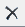

Model-Based Design Tool


The Model Explorer dock window provides the most holistic view of the QM™ model as it contains all model items in a hierarchical tree like structure, reflecting the arrangement of the items within the model. The Model Explorer dock window can be shown or hidden by means of the menu or the View Toolbar :
At the top-most level, the Model Explorer typically displays: the Model Item, the QP framework (qpc, qpcpp, or qpn), various packages, and directories.
You can use the Model Explorer to:
The order of items within the model has important consequences for code generation and QM™ honors the specific order as much as possible. For example, the class attributes, operations, parameters, etc. as well as states, transitions, and guard conditions within a state machine will appear in the generated code exactly in the order specified in the model.
The Model Explorer provides two ways to reorder items within the model:
The Current Item can be moved up or down within the Model Explorer by means of the Up and Down buttons on the Explorer Toolbar.
 Alternatively, the Current Item can be moved up or down within the Model Explorer by means of the keyboard shortcuts: Ctrl-(key-up) and Ctrl-(key-down).
Alternatively, the Current Item can be moved up or down within the Model Explorer by means of the keyboard shortcuts: Ctrl-(key-up) and Ctrl-(key-down).
The Model Explorer provides two ways to delete an item from the model:
The Current Item can be deleted from the model by means of the Delete button on the Explorer Toolbar.
Alternatively, the Current Item can be deleted from the model by means of the keyboard shortcut.
The Model Explorer supports drag-and-drop of model items within "container items", such as packages, classes, and directories. Note that drag-n-drop is not meant for reordering model items. Instead the purpose of drag-n-drop is to change the nesting of a given item from one "container item" to another.
To drag an item from one container to another, click on the item within the Model Explorer and while holding the (left) mouse button drag it to another "container item" until the mouse cursor shows that dropping is allowed.
The Model Explorer supports drag-and-drop of model items to File Windows to create Fully-Qualified Item Names inside Code-Generation Directives.

To drag an item to a file, click on the item within the Model Explorer and while holding the (left) mouse button drag it to an open file until the mouse cursor shows that dropping is allowed.
By right-clicking on any item in the Model Explorer you can open the item-specific popup menu, through which you can additionally:
By double-clicking on an item in the Explorer you can execute its default action. The default action for all model items is to expand the item if it is collapsed, and collapse it if it was expanded. Additionally, the default action for diagram and file-template items is to display the diagram or file in the Multiple Document Interface.
Next: Model Search